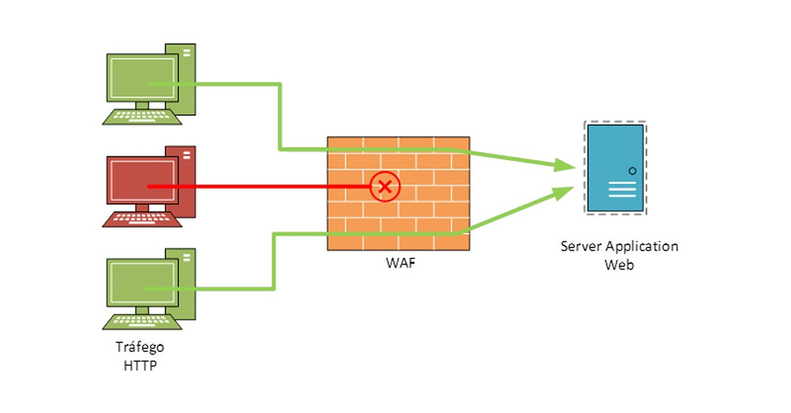
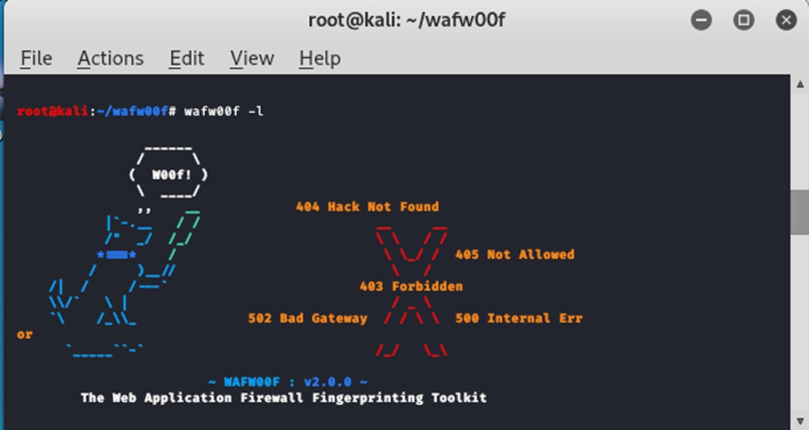

Segurança WAF
Um site informativo sobre oque é e como funciona o WAF.
Função:
WAF (ou Web Application Firewall) consiste em proteger aplicativos web ao monitorar e filtrar tráfegos HTTP/HTTPS entre o aplicativo web e a internet, protegendo contra ataques maliciosos. Um WAF protege ameaças como SQL Injection, Cross-Site Scripting, entre outros. O WAF não foi desenvolvido para proteger a aplicação de todo tipo de ataque, mas costuma fazer parte de um conjunto de ferramentas, criando uma defesa contra diversos vetores de ataque.
Diferença entre lista de permissões e lista de bloqueios:
Um WAF implantado com lista de bloqueio (modelo de segurança negativo) protege contra ataques conhecidos. Ou seja, ele impede ataques que foram bloqueados na sua configuração. Já a lista de permissões (modelo de segurança positivo) só admite o tráfego que foi pré-aprovado. Então ele só permite o acesso de tráfego que foi configurado a ter essa permissão. Basicamente, um protege de ataques conhecidos, e o outro só libera o tráfego que foi previamente permitido. Os dois têm seus prós e contras, por isso, muitos WAF’s oferecem um modelo híbrido, que usa os dois tipos de listas.
O que é WafW00f?
O WafW00f é uma ferramenta de segurança de código aberto para detectar e identificar que tipo de WAF um site específico está usando. Normalmente é usada por profissionais em cybersegurança a descobrir qual tipo de solução de segurança está ativa. É uma ferramenta comum nas ferramentas do Kali Linux, utilizada por testadores de penetração (ou pentesters) para entender como funciona a segurança de um site.
Como usar?
A ferramenta normalmente já vem instalada se você estiver usando o Kali Linux, mas caso não esteja, basta fazer a instalação. O uso básico da ferramenta funciona apenas usando o comando “wafw00f” e a URL do site que deseja conferir, por exemplo: “wafw00f https://www.google.com”. Com isso, será enviadas requisições HTTP para o URL e, caso haja, determinar o WAF e o fornecedor do site.
